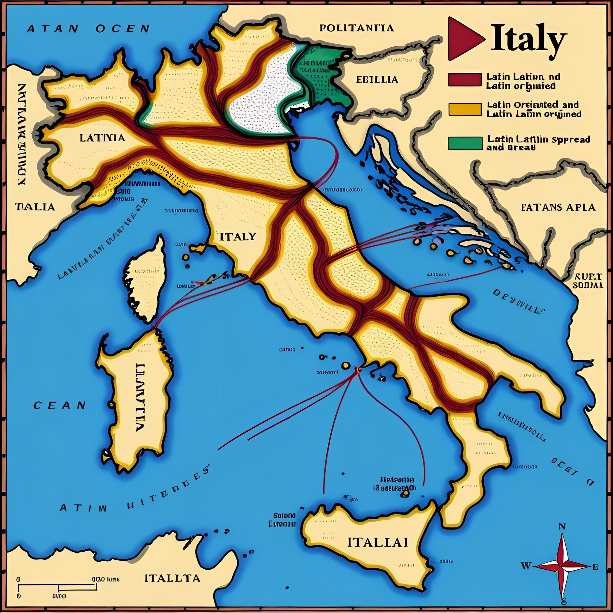
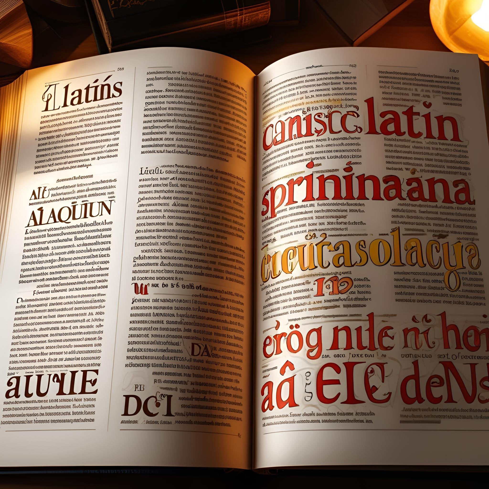

By Rayansh
Latin, which was first spoken by small communities near the lower Tiber River, evolved from earlier Italic languages and expanded throughout Italy and most of western and southern Europe. It also traveled to central and western Mediterranean coastal regions of Africa as Roman governmental power increased. The spoken Latin in different regions of the Roman Empire gave rise to the contemporary Romance languages.
Latin was the basis for the Roman Languages such as Spanish and French. The language also facilitated the spread of ideas and cultural elements. It also provided an insight into Ancient Rome through record keeping of laws, philosophies and more.
Vulgar Latin, the form of the language spoken by the common people of the Roman Empire, gave rise to the Romance languages, which include Italian, Spanish and others. The vocabulary, grammar, and syntax of many contemporary languages have Latin influence, which connects them to their cultural and historical origins.
Latin has had a major influence on academic and scientific terminology outside of the Romance languages. Latin-based words and naming standards are still used in many scientific fields, including biology, botany, astronomy, and medicine. Its accuracy and universality made it possible for academics from many locales and backgrounds to interact efficiently, overcoming geographical obstacles and promoting the spread of information.
